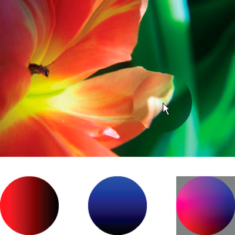

The DisplacementMapFilter class uses pixel values from a BitmapData
object (known as the displacement map image) to perform a displacement
effect on a new object. The displacement map image is typically
different than the actual display object or BitmapData instance
to which the filter is being applied. A displacement effect involves
displacing pixels in the filtered image—in other words, shifting
them away from their original location to some extent. This filter can
be used to create a shifted, warped, or mottled effect.
The location and amount of displacement applied to a given pixel
is determined by the color value of the displacement map image.
When working with the filter, in addition to specifying the map
image, you specify the following values to control how the displacement
is calculated from the map image:
-
Map point: The location on the filtered image at which
the upper-left corner of the displacement filter will be applied.
You can use this if you only want to apply the filter to part of
an image.
-
X component: Which color channel of the map image affects
the x position of pixels.
-
Y component: Which color channel of the map image affects
the y position of pixels.
-
X scale: A multiplier value that specifies how strong the
x axis displacement is.
-
Y scale: A multiplier value that specifies how strong the
y axis displacement is.
-
Filter mode: Determines what to do in any empty spaces created
by pixels being shifted away. The options, defined as constants
in the DisplacementMapFilterMode class, are to display the original
pixels (filter mode
IGNORE
), to wrap the pixels
around from the other side of the image (filter mode
WRAP
, which
is the default), to use the nearest shifted pixel (filter mode
CLAMP
),
or to fill in the spaces with a color (filter mode
COLOR
).
To understand how the displacement map filter works, consider
a basic example. In the following code, an image is loaded, and
when it finishes loading it is centered on the Stage and a displacement
map filter is applied to it, causing the pixels in the entire image
to shift horizontally to the left.
import flash.display.BitmapData;
import flash.display.Loader;
import flash.events.MouseEvent;
import flash.filters.DisplacementMapFilter;
import flash.geom.Point;
import flash.net.URLRequest;
// Load an image onto the Stage.
var loader:Loader = new Loader();
var url:URLRequest = new URLRequest("http://www.helpexamples.com/flash/images/image3.jpg");
loader.load(url);
this.addChild(loader);
var mapImage:BitmapData;
var displacementMap:DisplacementMapFilter;
// This function is called when the image finishes loading.
function setupStage(event:Event):void
{
// Center the loaded image on the Stage.
loader.x = (stage.stageWidth - loader.width) / 2;
loader.y = (stage.stageHeight - loader.height) / 2;
// Create the displacement map image.
mapImage = new BitmapData(loader.width, loader.height, false, 0xFF0000);
// Create the displacement filter.
displacementMap = new DisplacementMapFilter();
displacementMap.mapBitmap = mapImage;
displacementMap.mapPoint = new Point(0, 0);
displacementMap.componentX = BitmapDataChannel.RED;
displacementMap.scaleX = 250;
loader.filters = [displacementMap];
}
loader.contentLoaderInfo.addEventListener(Event.COMPLETE, setupStage);
The properties used to define the displacement are as follows:
-
Map bitmap: The displacement bitmap is a new BitmapData
instance created by the code. Its dimensions match the dimensions
of the loaded image (so the displacement is applied to the entire
image). It is filled with solid red pixels.
-
Map point: This value is set to the point 0, 0—again, causing
the displacement to be applied to the entire image.
-
X component: This value is set to the constant
BitmapDataChannel.RED
, meaning
the red value of the map bitmap will determine how much the pixels are
displaced (how much they move) along the x axis.
-
X scale: This value is set to 250. The full amount of displacement
(from the map image being completely red) only displaces the image
by a small amount (roughly one-half of a pixel), so if this value
was set to 1 the image would only shift .5 pixels horizontally.
By setting it to 250, the image shifts by approximately 125 pixels.
These settings cause the filtered image’s pixels to shift 250
pixels to the left. The direction (left or right) and amount of
shift is based on the color value of the pixels in the map image.
Conceptually, the filter goes through the pixels of the filtered
image one by one (at least, the pixels in the region where the filter
is applied, which in this case means all the pixels), and does the
following with each pixel:
-
It finds the corresponding pixel in the map image. For
example, when the filter calculates the displacement amount for
the pixel in the upper-left corner of the filtered image, it looks
at the pixel in the upper-left corner of the map image.
-
It determines the value of the specified color channel in
the map pixel. In this case, the x component color channel is the
red channel, so the filter looks to see what the value of the red
channel of the map image is at the pixel in question. Since the
map image is solid red, the pixel’s red channel is 0xFF, or 255.
This is used as the displacement value.
-
It compares the displacement value to the “middle” value
(127, which is halfway between 0 and 255). If the displacement value
is lower than the middle value, the pixel shifts in a positive direction
(to the right for x displacement; down for y displacement). On the
other hand, if the displacement value is higher than the middle
value (as in this example), the pixel shifts in a negative direction
(to the left for x displacement; up for y displacement). To be more
precise, the filter subtracts the displacement value from 127, and
the result (positive or negative) is the relative amount of displacement
that is applied.
-
Finally, it determines the actual amount of displacement
by determining what percentage of full displacement the relative
displacement value represents. In this case, full red means 100%
displacement. That percentage is then multiplied by the x scale
or y scale value to determine the number of pixels of displacement
that will be applied. In this example, 100% times a multiplier of 250
determines the amount of displacement—roughly 125 pixels to the
left.
Because no values are specified for y component and y scale,
the defaults (which cause no displacement) are used—that’s why the
image doesn’t shift at all in the vertical direction.
The default filter mode setting,
WRAP
, is used
in the example, so as the pixels shift to the left the empty space
on the right is filled in by the pixels that shifted off the left
edge of the image. You can experiment with this value to see the
different effects. For example, if you add the following line to
the portion of code where the displacement properties are being
set (before the line
loader.filters = [displacementMap]
),
it will make the image look as though it has been smeared across
the Stage:
displacementMap.mode = DisplacementMapFilterMode.CLAMP;
For a more complex example, the following listing uses a displacement
map filter to create a magnifying glass effect on an image:
import flash.display.Bitmap;
import flash.display.BitmapData;
import flash.display.BitmapDataChannel;
import flash.display.GradientType;
import flash.display.Loader;
import flash.display.Shape;
import flash.events.MouseEvent;
import flash.filters.DisplacementMapFilter;
import flash.filters.DisplacementMapFilterMode;
import flash.geom.Matrix;
import flash.geom.Point;
import flash.net.URLRequest;
// Create the gradient circles that will together form the
// displacement map image
var radius:uint = 50;
var type:String = GradientType.LINEAR;
var redColors:Array = [0xFF0000, 0x000000];
var blueColors:Array = [0x0000FF, 0x000000];
var alphas:Array = [1, 1];
var ratios:Array = [0, 255];
var xMatrix:Matrix = new Matrix();
xMatrix.createGradientBox(radius * 2, radius * 2);
var yMatrix:Matrix = new Matrix();
yMatrix.createGradientBox(radius * 2, radius * 2, Math.PI / 2);
var xCircle:Shape = new Shape();
xCircle.graphics.lineStyle(0, 0, 0);
xCircle.graphics.beginGradientFill(type, redColors, alphas, ratios, xMatrix);
xCircle.graphics.drawCircle(radius, radius, radius);
var yCircle:Shape = new Shape();
yCircle.graphics.lineStyle(0, 0, 0);
yCircle.graphics.beginGradientFill(type, blueColors, alphas, ratios, yMatrix);
yCircle.graphics.drawCircle(radius, radius, radius);
// Position the circles at the bottom of the screen, for reference.
this.addChild(xCircle);
xCircle.y = stage.stageHeight - xCircle.height;
this.addChild(yCircle);
yCircle.y = stage.stageHeight - yCircle.height;
yCircle.x = 200;
// Load an image onto the Stage.
var loader:Loader = new Loader();
var url:URLRequest = new URLRequest("http://www.helpexamples.com/flash/images/image1.jpg");
loader.load(url);
this.addChild(loader);
// Create the map image by combining the two gradient circles.
var map:BitmapData = new BitmapData(xCircle.width, xCircle.height, false, 0x7F7F7F);
map.draw(xCircle);
var yMap:BitmapData = new BitmapData(yCircle.width, yCircle.height, false, 0x7F7F7F);
yMap.draw(yCircle);
map.copyChannel(yMap, yMap.rect, new Point(0, 0), BitmapDataChannel.BLUE, BitmapDataChannel.BLUE);
yMap.dispose();
// Display the map image on the Stage, for reference.
var mapBitmap:Bitmap = new Bitmap(map);
this.addChild(mapBitmap);
mapBitmap.x = 400;
mapBitmap.y = stage.stageHeight - mapBitmap.height;
// This function creates the displacement map filter at the mouse location.
function magnify():void
{
// Position the filter.
var filterX:Number = (loader.mouseX) - (map.width / 2);
var filterY:Number = (loader.mouseY) - (map.height / 2);
var pt:Point = new Point(filterX, filterY);
var xyFilter:DisplacementMapFilter = new DisplacementMapFilter();
xyFilter.mapBitmap = map;
xyFilter.mapPoint = pt;
// The red in the map image will control x displacement.
xyFilter.componentX = BitmapDataChannel.RED;
// The blue in the map image will control y displacement.
xyFilter.componentY = BitmapDataChannel.BLUE;
xyFilter.scaleX = 35;
xyFilter.scaleY = 35;
xyFilter.mode = DisplacementMapFilterMode.IGNORE;
loader.filters = [xyFilter];
}
// This function is called when the mouse moves. If the mouse is
// over the loaded image, it applies the filter.
function moveMagnifier(event:MouseEvent):void
{
if (loader.hitTestPoint(loader.mouseX, loader.mouseY))
{
magnify();
}
}
loader.addEventListener(MouseEvent.MOUSE_MOVE, moveMagnifier);
The code first generates two gradient circles, which are combined
together to form the displacement map image. The red circle creates
the x axis displacement (
xyFilter.componentX = BitmapDataChannel.RED
),
and the blue circle creates the y axis displacement (
xyFilter.componentY = BitmapDataChannel.BLUE
).
To help you understand what the displacement map image looks like,
the code adds the original circles as well as the combined circle
that serves as the map image to the bottom of the screen.

The code then loads an image and, as the mouse moves, applies
the displacement filter to the portion of the image that’s under
the mouse. The gradient circles used as the displacement map image
causes the displaced region to spread out away from the pointer.
Notice that the gray regions of the displacement map image don’t
cause any displacement. The gray color is
0x7F7F7F
.
The blue and red channels of that shade of gray exactly match the middle
shade of those color channels, so there is no displacement in a
gray area of the map image. Likewise, in the center of the circle
there is no displacement. Although the color there isn’t gray, that
color’s blue channel and red channel are identical to the blue channel
and red channel of medium gray, and since blue and red are the colors
that cause displacement, no displacement happens there.